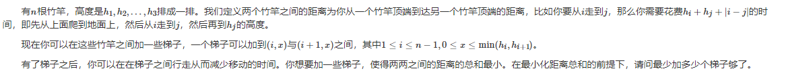
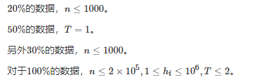
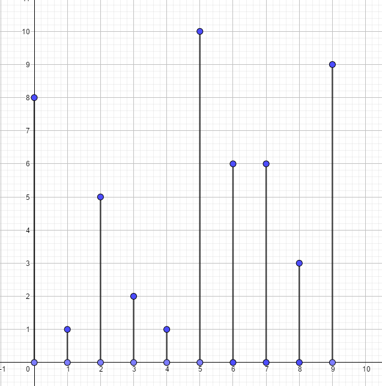
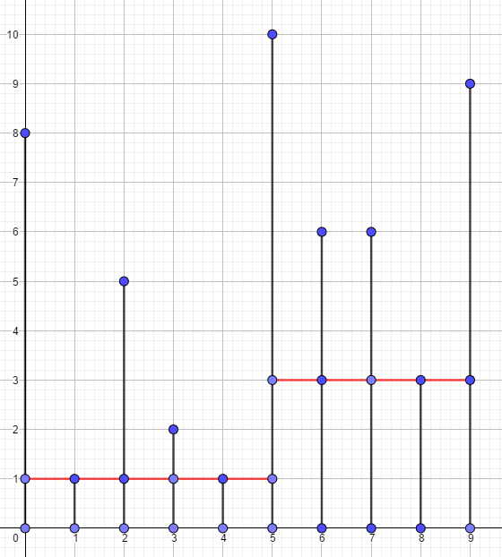
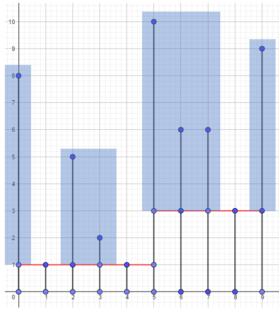
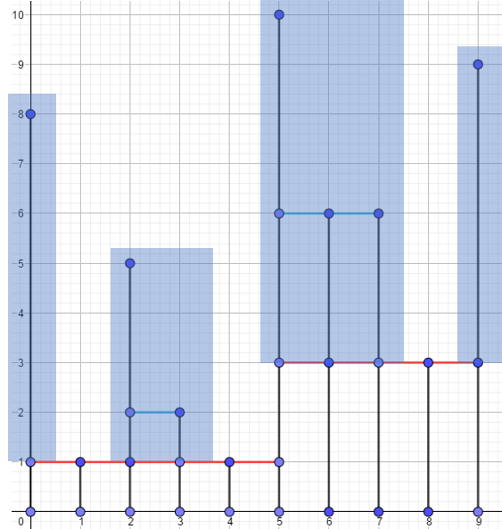
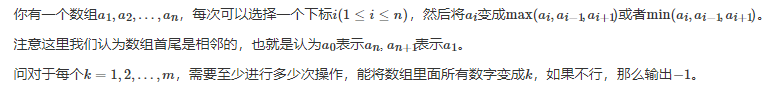
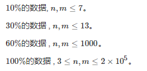
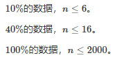

T1 爬杆 

对于第一问，显然答案为
现在考虑第二问，对于一个区间$l,r$，我们找到这个区间的最小值，那么对于任意一个左端点在最小值左边，右端点在最小值右边的两个竹竿，经过的路径只能先降再升
因此，我们考虑在当前区间中连接$r-l$个梯子，在最小值前面的梯子高度为所在杆子的前缀最小值，后面的梯子高度为所在杆子的后缀最小值，因为靠上放置梯子肯定更优秀
比如，对于样例$2$

最小值为$1$，那么我们连接$10-1=9$个梯子

这样即可使得所有最小值为当前区间最小值的两个杆子满足条件
同时，我们注意到，对于那些被当前梯子覆盖的杆子，越过它们，并且以它们为最小值的那些区间也满足条件了，不需要考虑
比如图中位置$8$就被梯子覆盖了，我们便不再考虑这根杆子
已经满足条件的杆子将这个区间分成了若干个小区间，对于每个小区间我们分治下去
比如上图就被分成了如下几个区间

对于这几个区间再分别处理即可

需要预处理每个数左边/右边第一个小于等于它的位置，单调栈即可
代码如下
1 2 3 4 5 6 7 8 9 10 11 12 13 14 15 16 17 18 19 20 21 22 23 24 25 26 27 28 29 30 31 32 33 34 35 36 37 38 39 40 41 42 43 44 45 46 47 48 49 50 51 52 53 54 55 #include <bits/stdc++.h> using namespace std ;const int N = 200010 ;typedef long long LL;int num[N], L[N], R[N], R1[N], stk[N]; LL res, res1;void solve (int l, int r) if (l >= r) return ; res += r - l; vector <int > tmp; int pos = r; while (pos >= l) tmp.push_back(pos), pos = L[pos]; pos = l; while (pos <= r) tmp.push_back(pos), pos = R[pos]; sort(tmp.begin(), tmp.end()); for (int i = 0 ; i < tmp.size() - 1 ; i++) solve(tmp[i] + 1 , tmp[i + 1 ] - 1 ); } int main () int n; scanf ("%d" , &n); for (int i = 1 ; i <= n; i++) scanf ("%d" , &num[i]); int top = 1 ; stk[top] = n; for (int i = n - 1 ; i >= 1 ; i--) { while (top && num[i] <= num[stk[top]]) L[stk[top]] = i, top--; stk[++top] = i; } top = 1 , stk[top] = 1 ; for (int i = 2 ; i <= n; i++) { while (top && num[i] <= num[stk[top]]) R[stk[top]] = i, top--; stk[++top] = i; } for (int i = 1 ; i <= top; i++) R[stk[i]] = n + 1 ; top = 1 , stk[top] = 1 ; for (int i = 2 ; i <= n; i++) { while (top && num[i] < num[stk[top]]) R1[stk[top]] = i, top--; stk[++top] = i; } for (int i = 1 ; i <= top; i++) R1[stk[i]] = n + 1 ; for (int i = 1 ; i <= n; i++) { res1 -= 2 * (LL)(i - L[i]) * (R1[i] - i) * num[i]; res1 += (LL)num[i] * (n - i + 1 ); res1 += (LL)num[i] * i; res1 -= (LL)i * (n - i + 1 ); res1 += (LL)i * i; } int T; scanf ("%d" , &T); printf ("%lld " , res1); if (T == 2 ) solve(1 , n), printf ("%lld\n" , res); }
T2 变换 

考虑枚举$k$
对于一个确定的$k$来说，由于每次操作只有$\min,\max$，因此两个大于$k$的数取$\min$仍然大于$k$，两个小于$k$的数取$\max$仍然小于$k$。换言之，我们只关心每个数与$k$的大小关系，而不关心它具体的值
因此，我们可以用$0/1/-1$来替换每个数。如果它比$k$小，就是$-1$；如果它等于$k$，就是$0$；否则是$1$
序列中的$0$将这个序列分成了若干段，对于每一段我们的策略是从左往右一次拓展过去
我们现在只考虑某一个$0$右边的两个数
如果这两个数相同，即0 1 1或0 -1 -1，那么我们显然可以通过一次$\min/\max$就能将中间的数变成$0$
但是如果这两个数不同，即0 1 -1或0 -1 1，那么我们只能先取一次$\min$，再取一次$\max$来将中间的数变为$0$
如果有连续的三个数为1 -1 1或者-1 1 -1，我们需要预先对中间的数多操作一次，将这三个数变得相同
比如对于0 1 -1 1 -1 1 0这个序列
我们会先对第三个位置、第五个位置操作一次，将这个序列变为0 1 1 1 1 1 0
接着再从左往右操作，每个数操作一次
因此，我们采取这样的策略：将被$0$分割出的子序列分成若干段极长的1 -1相间的段，每一段的答案为段长$+$段长除以$2$向上取整
代码就略了
T3 游戏

定义完美匹配为每个点都能找到它的一个未匹配的祖先匹配
那么后手必胜当且仅当这棵树存在完美匹配
如果存在完美匹配，那么很显然，当先手每选择一个点，后手就选择与它匹配的那一个点即可
否则，每当先手选择一个点，我们就将这个点以及后手选择的点删去，最后一定剩下若干个互不为祖先关系的点，先手只需要保证最后选择的点是存在匹配冲突的一个点，后手就凉了。
因此我们可以记$dp[i][j]$表示考虑了$i$的子树，其中有$j$个点未匹配，并且这棵子树不能全部不被选的方案数
代码如下
1 2 3 4 5 6 7 8 9 10 11 12 13 14 15 16 17 18 19 20 21 22 23 24 25 26 27 28 29 30 31 32 33 34 35 36 37 38 39 40 41 42 43 44 45 46 #include <bits/stdc++.h> using namespace std ;const int N = 2010 , mod = 998244353 ;typedef long long LL;struct edge { int to, next; } e[N * 2 ]; int head[N], ecnt;inline void adde (int from, int to) e[++ecnt] = (edge){to, head[from]}, head[from] = ecnt; e[++ecnt] = (edge){from, head[to]}, head[to] = ecnt; } inline void Inc (int &x, int y) x += y, x -= x >= mod ? mod : 0 ; } int dp[N][N], sz[N];void dfs (int u, int f) dp[u][0 ] = 1 , sz[u] = 1 ; for (int i = head[u]; i; i = e[i].next) if (e[i].to != f) { dfs(e[i].to, u); for (int j = sz[u]; j >= 0 ; j--) for (int k = sz[e[i].to]; k >= 0 ; k--) Inc(dp[u][j + k], (LL)dp[u][j] * dp[e[i].to][k] % mod); sz[u] += sz[e[i].to]; } int t = dp[u][0 ]; for (int i = 0 ; i < sz[u]; i++) Inc(dp[u][i], dp[u][i + 1 ]); Inc(dp[u][1 ], t), dp[u][0 ]--; } int main () int n; scanf ("%d" , &n); for (int i = 1 , a, b; i < n; i++) scanf ("%d%d" , &a, &b), adde(a, b); dfs(1 , 0 ); int res = 1 ; for (int i = 1 ; i <= n; i++) res = res * 2 % mod; printf ("%d\n" , (res - dp[1 ][0 ] - 1 + mod) % mod); }